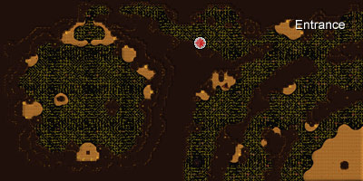
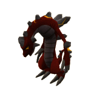

")
TzHaar Fight Cave
Introduction | Location | Requirements | Recommended Items | Saving Progress
Fighting to Survive | Defeating TzTok-Jad | Rewards | Development Team
Fighting to Survive | Defeating TzTok-Jad | Rewards | Development Team
The TzHaar Fight Cave is only accessible to RuneScape Members. Please subscribe to get this feature.
Please note this is a 'Safe' activity. If you die during this activity, you will retain all of your items.
Introduction

The TzHaar Fight Cave is a fast-paced, single-player boss encounter, with no limits and no restrictions. Are you strong enough to withstand waves of creatures? Do you have what it takes to last to the very end and claim the mark of a survivor?
Location

The TzHaar city is located deep under the volcano on Karamja. To get there, locate the volcano dungeon and go down into it. Once down, you should immediately see another dungeon entrance made from a lava-like material. Upon entering this, you will be in the TzHaar area. From the entrance, head south to the crossroads. Keep walking west until you have made it to the bank and you should also notice the activity star. Enter here to begin.
Requirements
There are no quest requirements for the Fight Cave. However, if you wish to make it all the way to the boss, a high Combat level with a strong Prayer level (60+) is advised.
Recommended Items
Please note: If you happen to die in the Fight Cave, you will retain all items; however, any lost arrows or runes will not be refunded, so choose your approach/weapons effectively.
With any approach, Prayer restore potions are a must. High-level healing foods are also recommended just in case you get hit.
Mage
Although in theory Magic may seem a good approach to beat the Fight Caves and its bosses, it is generally not advised unless your Magic level is high enough to use the more devastating spells, or if you can afford the vast quantity of runes required to succeed. Please bear in mind that what you take in your inventory must last all the way to the end boss.If you do choose to go as a mage, take the best robes you can afford for increasing your Magic statistics. If you have the ability to do so, you can use Ancient Magicks on the monsters for stronger attacks.
Melee
To last all rounds using only melee will not be easy. Be warned, you will take the most damage, and drain on Prayer potions, if you do not keep your wits about you. As ever, the majority of your inventory space should be dedicated to Prayer restore potions and some high-level healing food. Please note you will have difficulty meleeing the level 360 Ket-Zek when they arrive, so you will need Protect from Magic, and attack up front, watching and changing Prayer when necessary to Protect from Melee. These will not be easy fights for you.Ranged
Ranged is generally the most common approach for beating the Fight Caves. In your inventory, taking Prayer potions is a must. You can enter wearing any of the high-level Ranged armours, e.g. full black dragonhide, or mix-and-match with high-level Prayer bonus items to boost your prayer, allowing you to keep your Ranged attack nice and high.
Saving Progress
As the Fight Cave can take some time to fight your way through, you are able to save your progress at the end of an attack wave, in case you need to log out of the game for any reason. To do this, click on the logout button once so the game knows you wish to take a break. You will then automatically be logged out after all enemies in the current wave have been defeated. When you log back in, you will begin again on whatever the next wave would have been. If you manage to log yourself out before defeating all enemies on the current wave (i.e. by avoiding any combat for 10 seconds then logging out) you will have to start over on whatever wave you logged out on.
Be advised that it can be risky to use this progress saving feature, particularly once Ket-Zek start appearing in attack waves. You may not have time to activate the appropriate protection prayer on logging back in (though quick prayers may help here), before being hit by a Ket-Zek's magic attack. Use it wisely.
Fighting to Survive
From the moment you enter the cave, you are alone. Get ready for the toughest test of endurance known on RuneScape!
There are many waves in the Fight Cave and every wave should be considered harder and more dangerous than the wave before. It is worth noting that having your sound and effects on will be beneficial, as there are noises to tell you that you are passing onto the next wave.
Most monsters in the cave have a unique form of attack which is intended to make your job even harder, so plan well on what to kill first.
![[image]](../../img/main/kbase/minigames/tzhaar_fightcave/tz_kih.gif)
|
![[image]](../../img/main/kbase/minigames/tzhaar_fightcave/tz_kek.gif) |
|
| Tz-Kih - Level 22 Although seemingly harmless at Combat level 22, the Tz-Kih should be made your priority to kill every time you are aware of their presence. Every time they attack (even if they hit '0') 1 will be taken from your Prayer, so if you are aware of these flying towards you, it is best to shoot them with Ranged or Magic spells before they can hit you. |
Tz-Kek - Level 45 Again, harmless as they may seem, these will hit 10 damage to you if you hurt them. If you are worried about them, it is best to use Ranged or cast Magic at them. When they are killed, they will then split into two smaller Tz-keks of combat level 22. Dispose of these two in anyway you feel necessary. |
|
![[image]](../../img/main/kbase/minigames/tzhaar_fightcave/tok_xil.gif)
|
 | |
| Tok-Xil - Level 90 Whatever approach, these should not be underestimated. They use melee and Ranged attacks, with the Ranged attacks being very powerful and dangerous. Make killing Tok-Xils your next priority; in later rounds they can kill you without much effort with their Ranged attacks. |
Yt-MejKot - Level 180 A dangerous melee fighter but a slow-mover, which should make it relatively simple to kill him. Yt-Mejkot is very big and you will find he can get stuck on rocks quite easily, making the task of killing him that little bit easier. If Yt-Mejkot is attacking you, he may heal himself, or other monsters around him. |
|
![[image]](../../img/main/kbase/minigames/tzhaar_fightcave/ket_zek.gif)
|
![[image]](../../img/main/kbase/minigames/tzhaar_fightcave/yt_hur_kot.gif)
|
|
| Ket-Zek - Level 360 This is where you will be thanking your Prayer potions and any Prayer-boosting equipment. Ket-Zek will have no trouble defeating the strongest fighter in a few hits. However, as big and dangerous as Ket-Zek is, if you are using Magic or Ranged, simply put Protect from Magic on and attack from a distance. If you are meleeing you are in for a hard fight; Ket-Zek will hit incredibly hard with melee, so try to change your Prayers effectively and hit as soon as you can to defeat him. |
Yt-HurKot - Level 108 Harmless to you, as such, but deadly in a final fight against TzTok-Jad. These will come out and heal TzTok-Jad to full health. It is strongly advised that you remain focused on defending against TzTok-Jad's attacks, but hunt out and kill these one at a time, as quickly as possible. |
|

|
TzTok-Jad - Level 702 One of the toughest monsters in RuneScape. Make no mistake, Tztok-Jad will have no trouble killing you in two hits if you are not prepared for the fight. TzTok-Jad will use all forms of attack (Ranged, Magic and melee) against you. If you are lucky enough to get him to half health, you will notice the arrival of several healers that will restore him to full health if you do not kill them off. |
Defeating TzTok-Jad

While you may use a variety of approaches to get to the final wave, you will need to know the attacks that TzTok-Jad will use on you and how to avoid them.
To defeat Tztok-Jad, you will need to use your Prayer wisely and change as soon as you know what his next attack will be.
TzTok-Jad will attack with all types of attack if you give him the chance (melee, Ranged and Magic). It is vital to your survival that you learn quickly how to identify the attacks, so you can 'protect' against the attack in time.
Melee attack:
TzTok-Jad will only use his melee attack if you are standing next to him. If you are using Ranged or Magic to attack him, you shouldnt need to worry about melee attacks as you should be attacking from a distance. As for melee, when he is not doing any of his other attack styles, you should have Protect from Melee on at all times.
Ranged attack:
TzTok-Jad will lift his front legs and slam them into the ground, causing loose rocks from the roof to fall onto you. As soon as he lifts his legs, you should prepare yourself for a devastating Ranged attack.
Magic attack:
When preparing to use Magic, TzTok-Jad will lower his head, storing power for this next attack. You should prepare yourself, as you will soon be submitted to a powerful Magic attack.
When TzTok-Jad is at half health
Whatever your approach, at half health, Yt-HurKots will approach TzTok-Jad and begin to heal him. As hard as it may seem, you must stop fighting the boss and make killing these your highest priority, or else they will restore him to full health and keep returning.To get around these healers, there are generally two approaches.
You can either kill these healers, or leave them alive. Either way involves hitting them all once. When you have done this, they will all focus on attacking you, so they will follow you. Here you make your decision. Now they have stopped healing TzTok-Jad, you can either take them aside and kill them off one by one, or continue fighting TzTok-Jad and (hopefully) survive their melee attacks on you.
Rewards
Beating the caves is not an easy task, and the further you get, the more Tokkul you will receive.
If you are strong, determined and lucky enough to last and beat TzTok-Jad, you will be rewarded with the Cape of Fire. This cape is currently the only animated cape in RuneScape, and offers the following bonuses.
| Item | |||||||||||||||||||
| Attack Bonuses | Defence Bonuses | Other | |||||||||||||||||
![[Image: Stab]](../../img/main/kbase/table_text/stab1.gif "Stab") |
![[Image: Slash]](../../img/main/kbase/table_text/slash1.gif "Slash") |
![[Image: Crush]](../../img/main/kbase/table_text/crush1.gif "Crush") |
![[Image: Magic]](../../img/main/kbase/table_text/magic1.gif "Magic") |
![[Image: Range]](../../img/main/kbase/table_text/range1.gif "Range") |
|
|
|
|
|
![[Image: Summoning]](../../img/main/kbase/table_text/summoning1.gif "Summoning") |
![[Image: Strength]](../../img/main/kbase/table_text/strength1.gif "strength") |
![[Image: Prayer]](../../img/main/kbase/table_text/prayer1.gif "Prayer") |
|||||||
![[image]](../../img/main/kbase/minigames/tzhaar_fightcave/cape_fire2.gif) Fire Cape |
+ 1 | + 1 | + 1 | + 1 | + 1 | + 11 | + 11 | + 11 | + 11 | + 11 | + 11 | + 4 | + 2 | ||||||
Those who made it through all the waves will also receive 16,000 TokKul.
For a list of items and more information about Tokkul, see the Tzhaar Rewards Page.
Development Team
| Graphical Rework | |||
| Developer: | Graham B | Developer: | Paul B |
| Graphics: | James W, John S | Graphics: | Matt M, Matt S, Alex R, Linh N |
| QA: | Andy C | QA: | Daniel O'R |
| Audio: | Ian T | ||

More articles in
Activities
|
|
|
Further Help
If this article does not help you, you may find the following sections of the RuneScape site helpful:
|
|